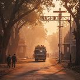
How to Reach
Flights · Railways · Road · Local Transport
A JOURNEY OF FAITH
A timeless journey of faith, devotion and spiritual awakening on the sacred banks of the Godavari.
PLAN YOUR VISIT
Everything you need to arrive, navigate
and experience the Kumbh with ease.

Flights · Railways · Road · Local Transport
Hotels · Camps · Dharamshalas · Accommodation
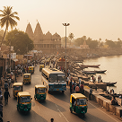
Routes · Shuttle Services · Parking · Transit
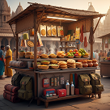
Food · Drinking Water · Toilets · Services
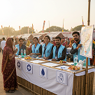
Medical · Police · Emergency · Lost & Found
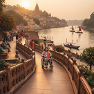
Accessible Routes · Facilities · Assistance
THE SACRED JOURNEY
Every twelve years, Nashik and Trimbakeshwar become the meeting place of millions of pilgrims, saints, seekers and visitors. Guided by an ancient tradition and centred around the sacred Godavari, the Kumbh is a celebration of faith, heritage and the timeless spirit of India.
DISCOVER THE JOURNEY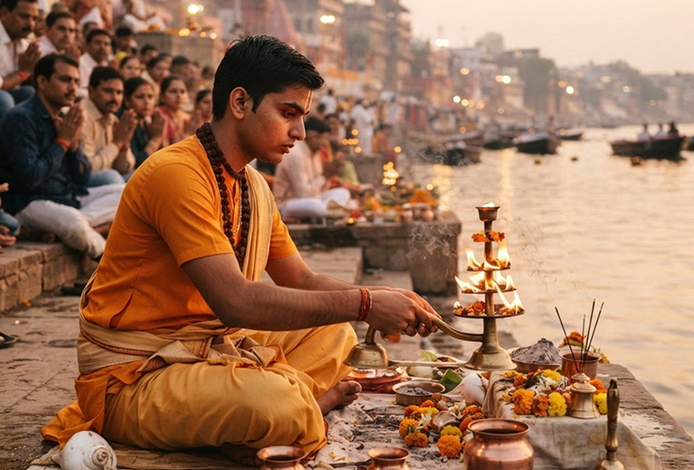
KEY CEREMONIES
OPENING
Ashwina Purnima
Sacred flag-hoisting ceremony marking the formal beginning of Simhastha at Nashik and Trimbakeshwar.
AMRIT SNAN
Kartika Purnima
The most auspicious bathing day, when millions gather at the sacred ghats of the Godavari.
AMRIT SNAN
Mauni Amavasya
The principal Shahi Snan, observed with great ceremony and deep spiritual significance by all Akharas.
CEREMONY
Vasanta Panchami
Celebration of the arrival of spring with religious ceremonies and processions across Nashik.
CULTURAL
Maha Shivaratri
A night of devotion and celebration centred around the sacred Trimbakeshwar Jyotirlinga temple.
PILGRIMAGE HIGHLIGHTS
Beyond the crowds and ceremonies lies a world of rituals, traditions, stories and moments that make every Kumbh unique.
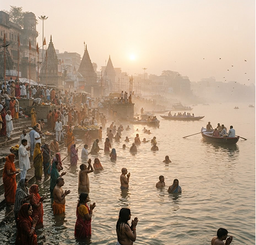
THE SACRED BATH
Witness the timeless ritual of sacred bathing along the Godavari - millions united in a single act of devotion.
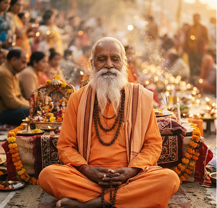
ANCIENT TRADITIONS
Discover the ancient spiritual orders and the traditions carried across generations of saints and ascetics.
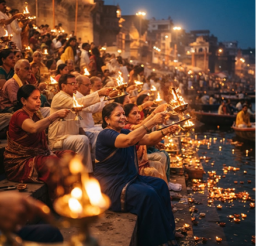
LIGHT AND SONG
Experience the light, chants and devotion that come alive along the sacred river as evening descends.
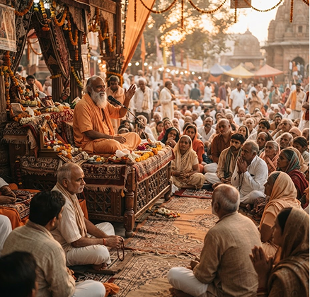
SATSANG & REFLECTION
Listen, reflect and connect through satsangs, pravachans and gatherings by revered teachers.
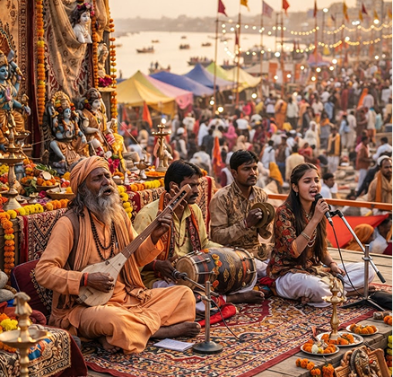
LIVING HERITAGE
Explore music, art, traditions and cultural expressions from across India in one sacred confluence.
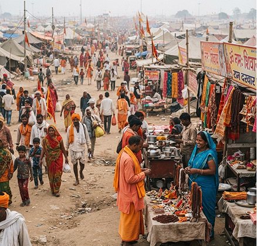
PILGRIM STORIES
Experience the people, colours, sounds and everyday moments that create the living, breathing Kumbh.
55
Million Pilgrims
13
Akharas
48
Days of Shahi Snan
18
Ghats
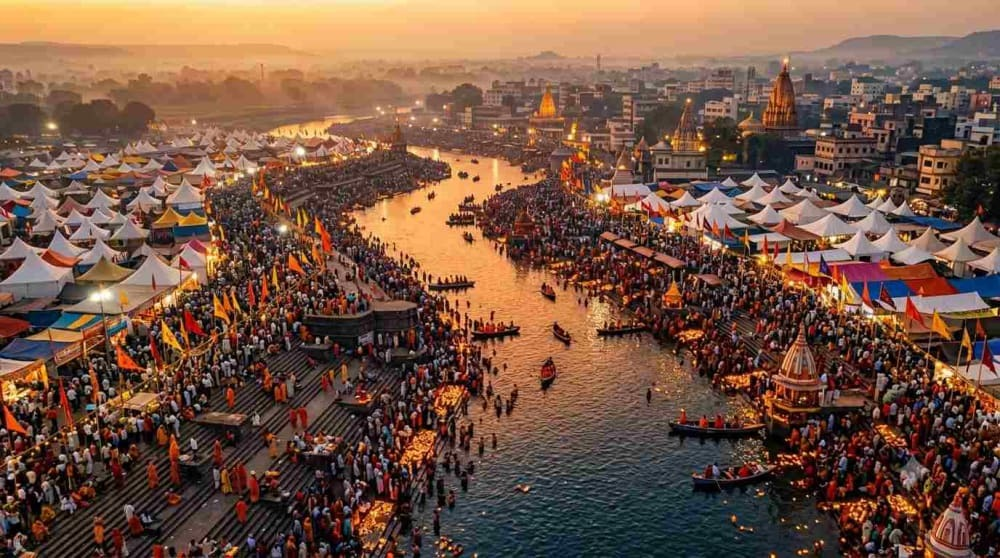
32
Million Footfall
01
Holy River
PLACES OF PILGRIMAGE
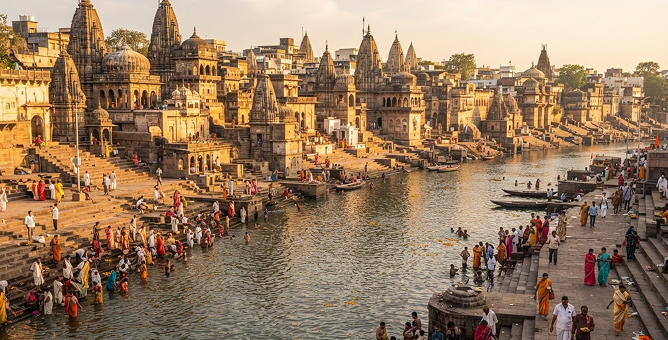
NASHIK
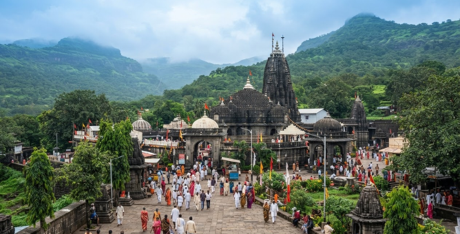
TRIMBAKESHWAR
Updated information for pilgrims and visitors planning their journey to Nashik-Trimbakeshwar Simhastha.
Find visitor registration information and travel updates through the Nashik district website.
Visit the Nashik district websiteThe Kumbh Mela Authority announces the upcoming release of the official ceremonial calendar for 2027.
Consult official announcements for the ceremonial calendar and confirmed bathing dates before planning your visit.
Visit the Nashik district websiteA series of pre-Kumbh cultural events, exhibitions and spiritual programmes will begin in late 2026.
Check official event listings for programme dates, venues and visitor information.
Visit the Nashik district websiteNo updates in this category yet.